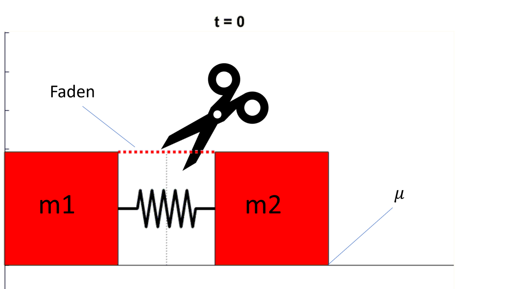
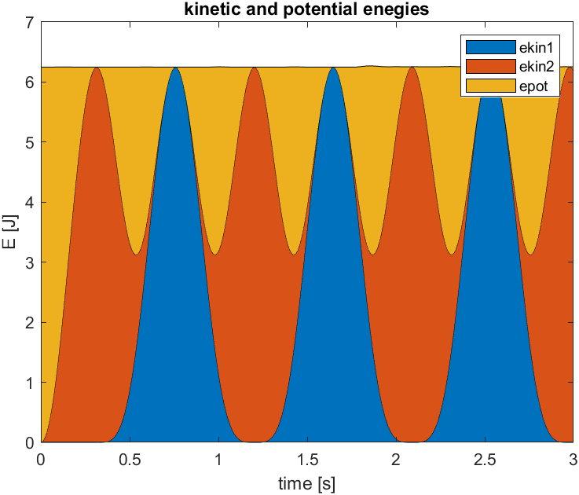
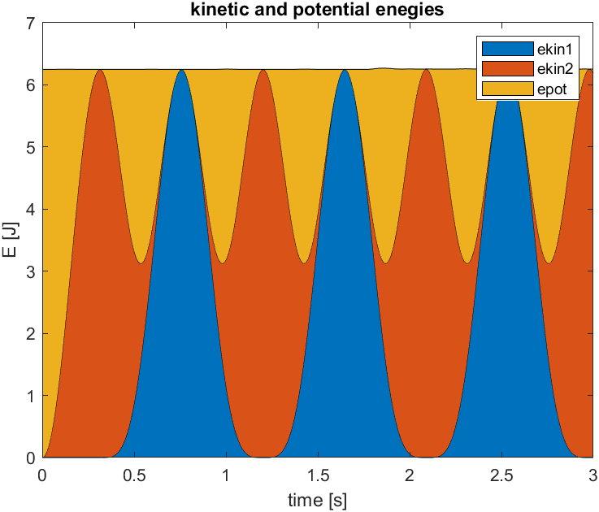
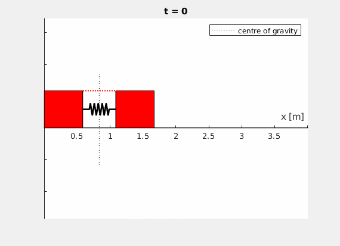
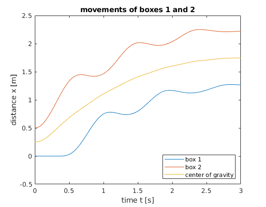
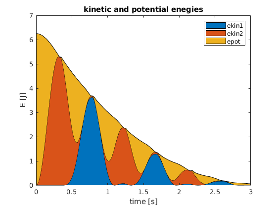

Github Repository
Github RepositoryRutschendes Masse-Feder-Masse System
Contents
Rutschendes Masse-Feder-Masse System¶
Vor einer Wand ruhen zwei gleiche Körper mit jeweils der Masse m auf einem glatten, d.h. reibungsfreien Boden. Zwischen den Körpern befindet sich eine Feder mit Federkonstante \(c\), die durch einen Faden um die Strecke \(\Delta s\) zusammengedrückt wird. Zur Zeit \(t=0\) wird der Faden durchgeschnitten.
{kind=link}
Aufgabe 1: Physikalische Intuition¶
Zu welcher Zeit \(t_A\) löst sich der Körper 1 von der Wand und wie groß ist dabei die Schwerpunktsgeschwindigkeit \(v_S\)?
Wie groß ist vermutlich die maximale Federdehnung \(s_\text{max}\) der anschließenden Schwingung?
Aufgabe 2: Berechnung der Bewegung¶
Die Zeit \(t_A\) durch Analyse einer Schwingungsbewegung allgemein gelöst werden. Danach nutzen Sie den Energieerhaltungssatz.
Teil (b) aus Aufgabe 1: Wie groß ist der Schwerpunktsanteil, wie groß der Relativanteil an der Bewegungsenergie?
Aufgabe 3: Lösung als ODE¶
Stellen Sie nun die ODE des Systems auf. Nutzen Sie zur Animation Ihrer Ergebnisse die unten stehenden Skripte. (gegebenenfalls müssen Sie die Reihenfolge anpassen, falls Sie online in OCTAVE arbeiten wollen)
% your code here
...
q0 = ...
tspan = ...
[t,q] = ode45(@(t,q) massspringode(q),tspan,q0);
plotboxes(t,q,m1,m2,l0,c)
function massspringode(q)
...
end
MATLAB Animation
Inklusive GIF-Export zum Vergleich verschiedener Szenarien.
function plotboxes(t,q,m1,m2,l0,c)
filename = 'boxes_animated.gif';
gifeverynth = 5;
ploteverynth = 1;
rho = 10;
boxdim1 = (m1/rho)^(1/3); boxdim2 = (m2/rho)^(1/3);
lspringelement = q(1,2)/5;
nspringelement = 5;
%% define figure
h = figure(1);
ax = axes(h);
set(ax,'xlim',[0 (max(q(:,2)) + boxdim1+boxdim2 + max(boxdim1,boxdim2))])
line(xlim, [0 0],'Color','black')
axis equal
xlabel('x [m]')
set(ax,'yticklabel',[])
ax.XAxisLocation = 'origin';
%% define boxes
box1 = [0 0; boxdim1 0; boxdim1 boxdim1; 0 boxdim1] ;
box2 = [0 0; boxdim2 0; boxdim2 boxdim2; 0 boxdim2] + [boxdim1 0];
%% run through timesteps
for i = 1:length(t)
if mod(i-1,ploteverynth)==0
%% reset figure by deleting moving objects
if i > 1
delete(p1);
delete(p2);
delete(spring);
delete(centreofgrav);
end
%% move boxes
x1 = q(i,1); x2 = q(i,2);
P1 = box1+[x1 0];
P2 = box2+[x2 0];
%% draw the spring
xspring = zeros(4+2*nspringelement,1);
xspring(1) = boxdim1+x1;
xspring(2) = xspring(1)+lspringelement;
xspring(3+2*nspringelement) = boxdim1+x2-lspringelement;
xspring(4+2*nspringelement) = boxdim1+x2;
dspring = (x2-x1-2*lspringelement)/(2*nspringelement);
xspring(3) = xspring(2) + dspring/2;
for j = 4:(2+2*nspringelement)
xspring(j) = xspring(j-1) + dspring;
end
yspring = zeros(4+2*nspringelement,1);
hspring = sqrt(lspringelement^2-dspring^2);
for j = 3:(2+2*nspringelement)
if mod(j,2) == 0
yspring(j) = -hspring;
else
yspring(j) = hspring;
end
end
yspring = yspring + ones(length(yspring),1)*min(boxdim1,boxdim2)/2;
% alternative: make spring connect between midpoints of boxes, if you like
% gradient = (boxdim2-boxdim1)/(2*(x2-x1));
% y0 = ones(length(yspring),1)*(boxdim1/2 - gradient*(boxdim1+x1));
% yspring = yspring + y0 + xspring*gradient;
yspring = real(yspring);
spring = line(xspring,yspring,'Color','black','Linestyle','-','Linewidth',2);
%% draw boxes
p1 = patch(P1(:,1),P1(:,2),'r');
p2 = patch(P2(:,1),P2(:,2),'r');
%% calculate and draw centre of gravity
xcentre1 = q(i,1)+boxdim1/2;
xcentre2 = q(i,2)+boxdim1+boxdim2/2;
xcentre = (m1*xcentre1+m2*xcentre2)/(m1+m2);
centreofgrav = line(xcentre*[1 1],[-(boxdim1+boxdim2)/2 (boxdim1+boxdim2)*3/2/2],'Color','black','Linestyle',':','DisplayName','centre of gravity');
%% initial step: cut string
if i == 1
string = line([P1(3,1) P2(4,1)], [P1(3,2) P2(4,2)],'Color','red','Linestyle',':','Linewidth',1.5);
%h(4) = spring;
end
title(['t = ',num2str(t(i))])
legend off
legend(centreofgrav)
drawnow
end
if q(i,3)<1e-3 && q(i,4)<1e-3 && q(i,1)>0
title(['t = ',num2str(t(i)),', stopped plot due no further movement'])
frame = getframe(h);
im = frame2im(frame);
[imind,cm] = rgb2ind(im,256);
imwrite(imind,cm,filename,'gif','DelayTime',2,'WriteMode','append');
break
end
if mod(i-1,gifeverynth)==0
% Capture the plot as an image
frame = getframe(h);
im = frame2im(frame);
[imind,cm] = rgb2ind(im,256);
% Write to the GIF File
if i == 1
imwrite(imind,cm,filename,'gif','DelayTime',2,'Loopcount',inf)
else
imwrite(imind,cm,filename,'gif','DelayTime',0.1,'WriteMode','append');
end
end
if i == 1
pause(1)
delete(string);
end
end
figure(2)
plot(t,q(:,1),t,q(:,2),t,(m1*q(:,1)+m2*q(:,2))/(m1+m2))
title('movements of boxes 1 and 2')
legend('box 1','box 2','center of gravity','Location','southeast')
xlabel('time t [s]')
ylabel('distance x [m]')
figure(3)
ekin1 = 1/2*m1*q(:,3).^2;
ekin2 = 1/2*m2*q(:,4).^2;
ekinsum = ekin1 + ekin2;
epot = 1/2*c*(l0-(q(:,2)-q(:,1))).^2;
etotal = ekinsum+epot;
plot(t,ekin1,t,ekin2,t,ekinsum,t,epot,t,etotal)
title('kinetic and potential enegies')
legend('ekin1','ekin2','ekinsum','epot','etotal')
xlabel('time')
ylabel('E [J]')
figure(4)
ekin1 = 1/2*m1*q(:,3).^2;
ekin2 = 1/2*m2*q(:,4).^2;
ekinsum = ekin1 + ekin2;
epot = 1/2*c*(l0-(q(:,2)-q(:,1))).^2;
etotal = ekinsum+epot;
area(t,[ekin1,ekin2,epot])
title('kinetic and potential enegies')
legend('ekin1','ekin2','epot')
xlabel('time [s]')
ylabel('E [J]')
end
OCTAVE Animation
Hinweis
Sollte das Schreiben der GIF-Datei sehr lange dauern, setzen Sie im Code gifeverynth = 0 oder sehr hoch.
Diese Version der Animation enthält eine vereinfachte Darstellung der Feder und kein Massezentrum.
function plotboxes_OCTAVE(t,q,q0)
%graphics_toolkit (gnuplot)
filename = 'boxes_animated.gif';
gifeverynth = 20;
ploteverynth = 5;
h = figure(1);
boxdim = 1;
ax = axes(h);
set(ax,'xlim',[0 (max(q(:,2)+3*boxdim))])
axis equal
box1 = [0 0; boxdim 0; boxdim boxdim; 0 boxdim] ;
box2 = [0 0; boxdim 0; boxdim boxdim; 0 boxdim] + [(q0(2)+boxdim) 0];
for i = 1:length(t)
if mod(i-1,ploteverynth)==0
if i > 1
delete(p1);
delete(p2);
delete(spring);
end
P1 = box1+[q(i,1) 0];
P2 = box2+[q(i,2) 0];
if i == 1
string = line([P1(3,1) P2(4,1)], [P1(3,2) P2(4,2)],'Color','red','Linestyle',':','Linewidth',2);
end
spring = line([P1(3,1) P2(4,1)], [P1(3,2) P2(4,2)]/2,'Color','black','Linestyle','-','Linewidth',2);
p1 = patch(P1(:,1),P1(:,2),'r');
p2 = patch(P2(:,1),P2(:,2),'r');
title(['t = ',num2str(t(i))])
drawnow
end
if q(i,3)<1e-3 && q(i,4)<1e-3 && q(i,1)>0
title(['t = ',num2str(t(i)),', stopped plot due no further movement'])
break
end
if gifeverynth > 0 && mod(i-1,gifeverynth)==0
% Capture the plot as an image
frame = getframe(h);
im = frame2im(frame);
[imind,cm] = rgb2ind(im);
% Write to the GIF File
if i == 1
imwrite(imind,cm,filename,'gif', 'Loopcount',inf,'Quality',10)%ind,cm
else
if i == gifeverynth
imwrite(imind,cm,filename,'gif','DelayTime',1,'WriteMode','append','Quality',10);
else
imwrite(imind,cm,filename,'gif','DelayTime',0.1,'WriteMode','append','Quality',10);
end
end
end
if i == 1
pause(1)
delete(string);
else
pause(0.01)
end
end
figure(2)
plot(t,q(:,1),t,q(:,2),t,(m1*q(:,1)+m2*q(:,2))/(m1+m2))
title('movements of boxes 1 and 2')
legend('box 1','box 2','center of gravity','Location','southeast')
xlabel('time t [s]')
ylabel('distance x [m]')
figure(3)
ekin1 = 1/2*m1*q(:,3).^2;
ekin2 = 1/2*m2*q(:,4).^2;
ekinsum = ekin1 + ekin2;
epot = 1/2*c*(l0-(q(:,2)-q(:,1))).^2;
etotal = ekinsum+epot;
plot(t,ekin1,t,ekin2,t,ekinsum,t,epot,t,etotal)
title('kinetic and potential enegies')
legend('ekin1','ekin2','ekinsum','epot','etotal')
xlabel('time')
ylabel('E [J]')
figure(4)
ekin1 = 1/2*m1*q(:,3).^2;
ekin2 = 1/2*m2*q(:,4).^2;
ekinsum = ekin1 + ekin2;
epot = 1/2*c*(l0-(q(:,2)-q(:,1))).^2;
etotal = ekinsum+epot;
area(t,[ekin1,ekin2,epot])
title('kinetic and potential enegies')
legend('ekin1','ekin2','epot')
xlabel('time [s]')
ylabel('E [J]')
end
Ihr Ergebnis könnte beispielsweise so aussehen (\(l_0 = 1 \,\text{m}\), \(c = 50 \,\frac{\text{N}}{\text{m}}\), \(x_2(t=0) = 0.5 \,\text{m}\), \(m_1 = m_2 = 2 \,\text{kg}\)):

 

{kind=link}
Bei unterschiedlichen Massen sieht das Verhalten etwas anders aus (hier: \(m_1 = 4 \,\text{kg}, m_2 = 2 \,\text{kg}\)):


Aufgabe 4¶
Erweitern Sie nun Ihre ODE Funktion so, dass Sie auch einen Reibungskoeffizienten mit einbeziehen können.
Bedenken Sie, wovon die Reibkraft abhängt, wie und wann sie wirkt.
Setzen Sie sinnvolle Abbruchbedingungen, um Oszillationen mit sehr geringer Bewegung zu vermeiden.
Für \(\mu = 0.1\) und \(m_1 = m_2 = 2 \,\text{kg}\) schwingt das System so:
  {kind=link}
{kind=link}
{kind=link}